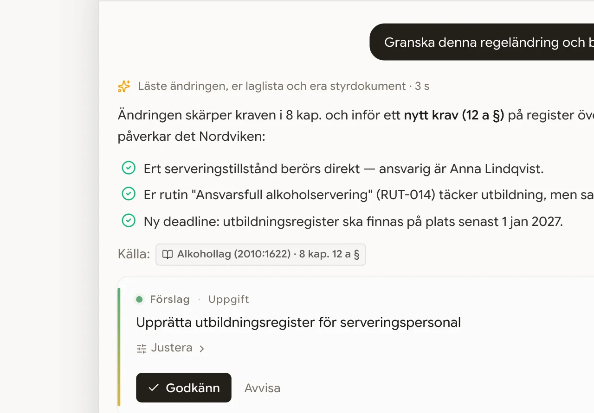
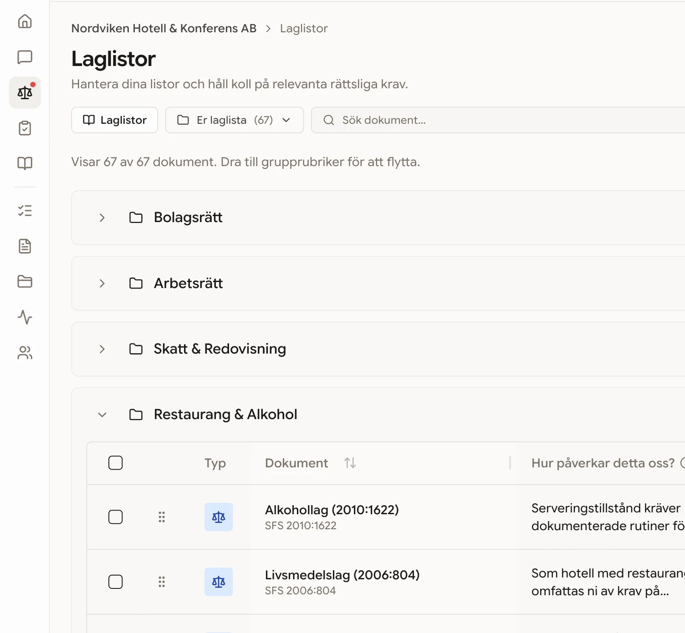

Designspråk · Elevation av landing v3
V3:s grund är rätt: varm monokrom, Safiro, en sparsam amber. Det som skiljer den från Linear/Stripe-klassen är inte paletten utan materialkänslan — allt ljus är i dag neutralt, alla skuggor är rent svarta, alla ytor är matematiskt släta, och sidan saknar en mörk vilopunkt.
Tre riktningar nedan, byggda för att kombineras — inga nya kulörer, ingen ny typografi. Bara mer omsorg i ljus, rytm och detalj.
Minsta ingreppet, störst effekt. Skuggorna tintas brunsvarta i stället för rent svarta, varje ram får ett toppljus, och hero + mörka ytor får ett knappt synligt papperskorn. Ingen enskild detalj syns — men ytan går från ”skärm” till ”papper i eftermiddagsljus”.
Nu — kall skugga, platt yta

Förhöjt — varm skugga, toppljus, korn
Amber blir ett system — fyra intensiteter, fyra roller
amber-wash
Bakgrund: markerad text, tonade paneler. Aldrig som ”färgblock”.
amber-line
Streck: understrykningar, grafmarkörer, aktiv-indikatorer.
amber-ink
Textsäker: eyebrows, inline-länkar, siffror i statistik.
amber-core
Punktljus. Max en per viewport — regeln som håller sidan monokrom.
Markera texten i det här stycket — ::selection blir amber-wash. En detalj ingen designar men alla känner. Inline-länkar får den här behandlingen i stället för dagens neutrala.
V3 är ljus från topp till botten — ögat får aldrig vila, och slut-CTA:n
konkurrerar på samma ljushet som allt annat. En inverterad sektion i
varmt brunsvart (--ink: 28 14% 9% — samma varma
familj, inte kall grafit) ger sidan en basnot. Reserverad för två
platser: slut-CTA:n och footern. Här bär amber-core sitt enda framträdande.
Kom igång · 30 sekunder
Ange ert organisationsnummer så visar Laglig vilka regelverk som gäller just er verksamhet — innan ni ens skapat ett konto.
Ingen betalning, inget kortnummer. Laglistan genereras från Bolagsverkets SNI-koder och 14 000+ författningar i SFS.
14 212
författningar bevakade
4 min
från orgnr till laglista
Varje dag
kontroll mot SFS & EUR-Lex
Samma bläck som smalt band — trust-strip under hero eller ovanför footern. En amber-siffra pekar ut det viktigaste talet.
Laglig.se:s råmaterial är författningstext — ett av världens mest formaliserade typografiska system. I stället för att låna Linears SaaS-detaljer kan sektionsapparaten låna lagbokens: paragraftecken, SFS-nummer, fotnoter, dubbla linjer. Det är differentieringen ingen konkurrent kan kopiera trovärdigt.
Sektionsetiketter — från chip till lagboksmarginal
Nu
02 · BevakningFörhöjt
När arbetsmiljölagen ändras får ni inte en länk till lagtexten — ni får en bedömning av vad ändringen betyder för just er verksamhet, grundad i er laglista och era kollektivavtal1. Klar att godkänna eller skicka vidare2.
Sektionsbrytare — dubbel linje i stället för ton-i-ton-bakgrundsbyte
Samma hero som i dag — rubrik, org-check, produktbild — med alla tre riktningarna pålagda. Skillnaden ska kännas mer än synas.
Laglig hjälper svenska företag, myndigheter och organisationer att hålla koll på reglerna — så att ni kan fokusera på affärerna.
Vilka regler gäller er? · 30 sek

Allt ovan är ~20 rader CSS-variabler plus fem utilities. Inga nya typsnitt, inga nya kulörfamiljer — bläcket och ambern ligger båda i palettens befintliga varma hue-band (28–42°).
/* Bläck — inverterade sektioner (slut-CTA, footer, trust-band) */ --ink: 28 14% 9%; --ink-foreground: 40 25% 96%; --ink-soft: 28 11% 13%; --ink-muted: 35 8% 62%; --ink-border: 35 8% 22%; /* Amber-ramp — en accent, fyra roller */ --amber-wash: 42 75% 94%; /* ::selection, tonade paneler */ --amber-line: 38 70% 58%; /* understrykningar, markörer */ --amber-ink: 30 62% 36%; /* textsäker — eyebrows, länkar */ --amber-core: 38 88% 54%; /* punktljus — max EN / viewport */ /* Varm skugga — ersätter rgb(0 0 0 / x) i alla marketing-ramar */ .shadow-warm { box-shadow: 0 1px 2px 0 hsl(28 40% 12% / .04), 0 8px 16px -4px hsl(28 40% 12% / .06), 0 24px 48px -12px hsl(28 45% 14% / .11), 0 56px 112px -28px hsl(28 50% 15% / .18); } /* Övrigt: .grain (3,5 % feTurbulence), .edge-light (1px toppljus), .hairline-x (gradient-hårlinje), ::selection → amber-wash */
Steg 1 — gratis
Varma skuggor, ::selection, edge-light, gradient-hårlinjer. Ren token-swap, noll layoutrisk.
Steg 2 — rytm
Bläck-CTA + bläck-footer + trust-band under hero. Störst upplevd lyft-per-timme.
Steg 3 — signatur
Paragraf-apparaten: §-etiketter, fotnoter, ghost-glyfer, amber-understrykning i hero.